大木結構
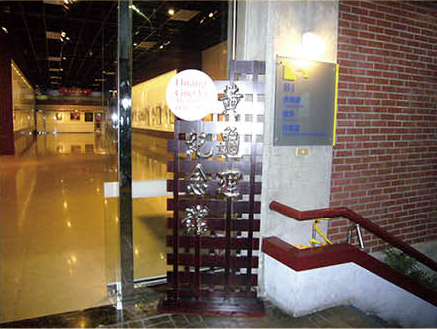
本嚴黃龜理大師木作介紹
黃龜理1903年生,家住板橋,投入陳應彬門下, 勤學鑿花技藝。曾任教於國立藝術專科學校雕塑 科10年。由於技術精湛、戮力傳藝,迭獲殊榮, 1985年榮獲教育部第1屆「民族藝術薪傳獎」; 1989年榮獲教育部第1屆「國家重要民族藝術藝 師」。1995年,黃龜理病逝,2001年,縣政府在 臺北縣藝文中心成立「黃龜理紀念館」(如圖), 將其作品永久典藏。(本介紹專題全由張仁甫攝影, 撰稿 )
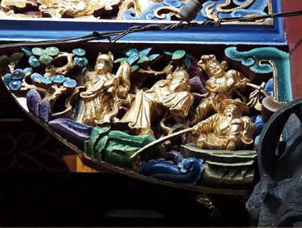
位置:本嚴前(三川)殿前步口左壽樑
題材:渭水聘賢(1933年完成) 黃河的第一大支流渭水發源於甘肅,在陝西潼關 古城注入黃河。商朝末年,紂王暴虐無道,姜子牙 辭官隱居,相傳在陝西境內、渭水附近的幡溪谷溪邊,以奇妙的方式约焦。西伯侯姬昌(周文王)求 賢若渴,聽聞姜子牙胸懷韜略,遂親往渭水,聘請 83歲的姜子牙為大司馬,尊為太公,修文練武、 勵精圖治。約西元前1046年,姜子牙輔佐周武王 領兵伐紂,大敗商軍於牧野,一匡天下。
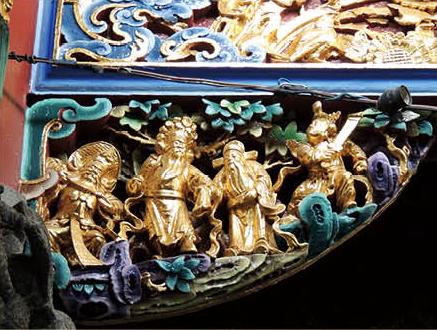
位置:本嚴前殿前步口右壽樑
題材:單刀赴會(1933年完成) 孫權扣押孔明兄長諸葛謹老小,迫劉備歸還荊州,劉備表示願先還長沙、零陵、桂陽三郡。但荊州守將關羽不肯交割,魯肅請關羽赴陸口會宴商 量,關羽僅帶少數親信赴會,宴中一言不合,雲長右手奪取周倉所執大刀,左手挽住魯肅右手,同回江邊關平船中,始釋放魯肅,岸邊東吳將領呂蒙、甘寧束手無策。後曹操取漢中,劉備見曹操大軍壓境,便同意交割判州三郡,惟請孫權齊攻合肥。
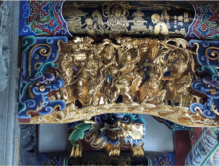
位置:本嚴前殿前步口左員光(通隨)
題材:齣頭不明(1933年完成) 左圖中央騎馬武將手持雙鎚。《封神榜演義》中, 黃飛虎長子黃天化手持雙鎚,但黃天化的座騎是玉麒麟,不是馬匹。在《三國演義》中,武安國使用雙鎚,在虎牢關被呂布砍斷手腕,但圖中看不到呂 布。《說唐》中,隋唐第一好漢李元霸與第三好漢裴元慶都使用雙鎚。《精忠岳傳》中,岳飛之子岳雲也手持雙鎚。圖中手持雙鎚之武將背向讀者,如此安排似乎不是主角,題材尚待深入探究。
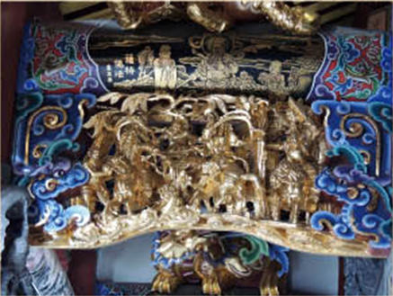
位置:本嚴前殿前步口右員光(通隨)
題材:劉備躍馬過檀溪(1933年完成) 劉備投奔荊州牧劉表後,劉表安排他駐紮新野。 名士伊藉曾對劉備談及其坐騎的盧馬會對主人不利,但劉備一笑置之。劉表繼室蔡夫人與其弟蔡瑁認為劉備將併吞荊州,遂設計劉備前來襄陽出席宴會,宴中幸得伊藉示警,劉備倉皇逃走,縱馬逕奔西門,門外碰上波濤淘湧的檀溪。劉備加鞭大呼:「的盧!的盧!今日妨吾!」言畢,的盧馬若有神助,忽然一躍三丈,飛上對岸,化險為夷。
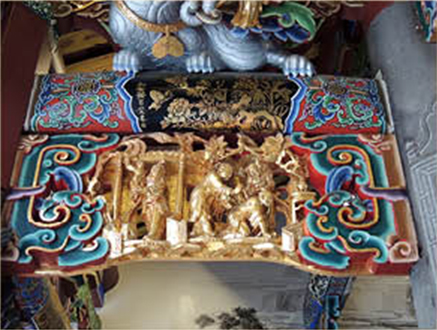
位置:本嚴前殿後步口右員光(通隨)
題材:岳母刺字(1933年完成) 西元1126年,金人攻陷北宋首都汴京(河南開封),擄走宋欽宗和太上皇宋徽宗等,岳飛(1103~1142)決心從軍報國。相傳臨行前,母親姚氏取一銀針,在岳飛背上刺下「盡忠報國」四字,激勵岳飛奮勇殺敵、精忠報國的決心和勇氣,成為名留青史的民族英雄。雖然岳母是否識字?是否知曉刺字的手藝?有待考證,但岳母刺字的故事卻流傳千古。
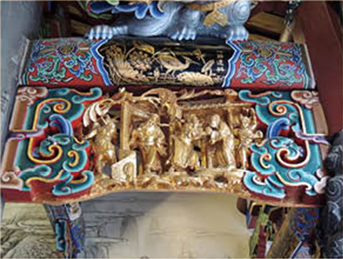
位置:本嚴前殿後步口左員光(通隨)
題材:徐母打曹(1933年完成) 劉備得到徐庶的輔佐,連敗曹仁兵馬,佔領樊城。曹操謀士程昱知道徐庶侍母至孝,遂獻計騙請徐母到許昌。曹操供以文房四寶,要她修書招徐庶前來許昌,棄劉歸曹,徐母不從,大罵曹賊奸倭不臣,拿起硯台,擲向曹操。曹操欲殺徐母,程昱勸止,用計假冒徐母字跡,寫信將徐庶騙回。徐母見兒子被騙,責罵兒子不賢,辱及祖先,自盡而亡。
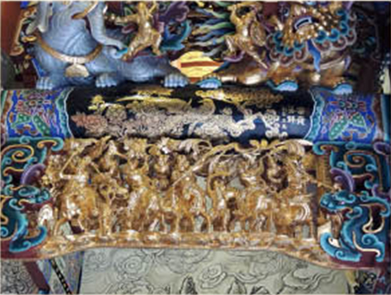
位置:本嚴正殿前之拜殿左員光(通隨)
題材:暴紂十罪(1933年完成) 周武王伐紂軍隊攻入朝歌城內,紂王上逍遙馬、 手提金背刀,出九間殿會周軍,魯仁傑與雷鵬、雷鵾擔任左右翼。姜子牙在四不像上,向紂王痛陳其十大罪狀,紂王氣得目瞪口呆,八百諸侯湧上來誅君,東伯侯姜文煥、南伯侯鄂順、北伯侯崇應鸞等力戰紂王,紂王逃回午門,一番爭鬥後,紂王縱火燒宮,由摘星樓躍下墜樓而亡,結束殷商王朝。
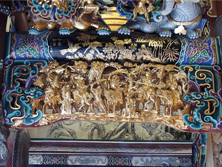
位置:本嚴正殿前之拜殿右員光(通隨)
題材:華容道釋曹(1933年完成) 赤壁大戰後,諸葛亮算得曹操必向西北敗走華容,於是安排三處伏兵。曹操退到烏林時,笑稱周瑜、諸葛亮無謀,不料立見趙雲領兵來襲。退到葫蘆口時,曹操又笑周瑜、諸葛亮弱智,未料張飛雄兵出現,曹軍喪膽。曹操逃到華容道口,狂笑周瑜、諸葛亮無能,埋伏的關羽突截去路,曹操動以恩義關羽心軟,放走曹操,讓他經彝陵安返襄陽。
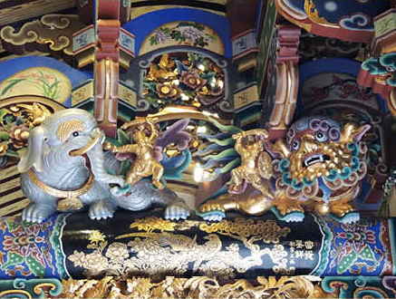
位置:本嚴正殿前之拜殿左右步通獸座
說明:(1933年完成) 依據教育部1996年所出版《木雕-黃龜理藝師作品圖鑒》上冊之記載,本嚴正殿前之拜殿左右步通上的「獅座象座配人物」,均為黃龜理的作品, 左獅右象,精緻華麗。獸座上所置人物,兩手各持不同武器,架勢非凡。西遊記提及青獅是青毛獅子,是山西五台山文殊菩薩的坐騎;白象是六牙白象,是峨眉山普賢菩薩的坐騎。
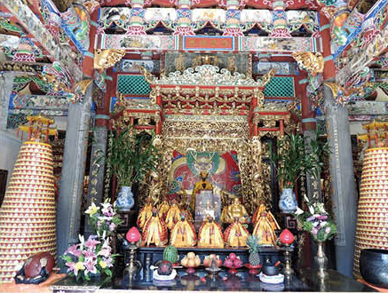
位置:本嚴正殿中央神龕(正龕)
說明:(1933年完成) 知名大廟例如瑞芳勸濟堂、淡水清水巖、北投關渡宮、三峽長福巖等,保有黃龜理的神龕作品,尤其神龕的木雕龍柱精湛珍貴。本嚴正龕乃黃龜理瀝血傑作,1935年要價1600圓,約為正殿石龍柱 440圓的四倍。今新進國中教師月薪約44000元, 1935年時,新進教師約16圓。準此,本嚴正龕時 價約為新台幣440萬元,其實是無價珍寶。
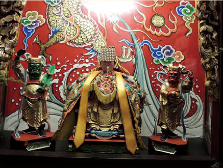